Welcome
Sign up now and get this full-resolution digital download free — The Turquoise Basin No. 1, normally $9.99 (CAD), yours immediately as a welcome gift. Full print resolution: 4800 × 6000px at 300dpi (ready to print at 16 × 20in), delivered as an ~5MB JPEG.
Roughly every two weeks after that, a new real place — seen from orbit, on a real day — lands in your inbox first, before it's posted publicly on the site. No spam, one click to unsubscribe any time. See the privacy policy for details.
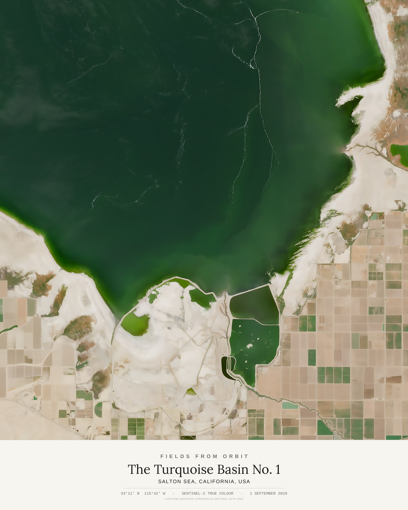
Your free welcome gift: The Turquoise Basin No. 1
A sample of the archive so far — 138 real places, and counting. Hover any image for its country, click to see the piece.
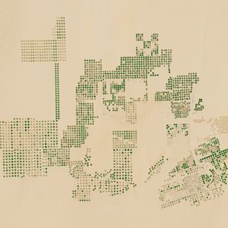
Egypt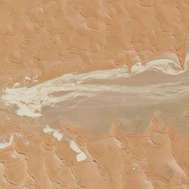
Namibia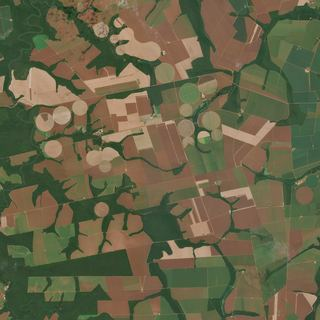
Brazil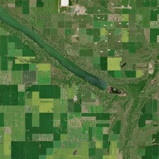
Canada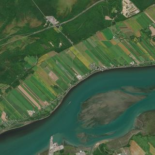
Canada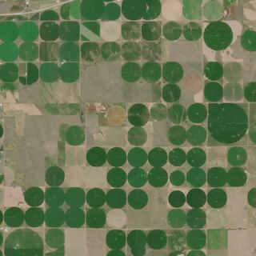
United States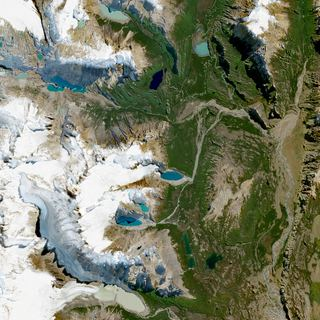
Argentina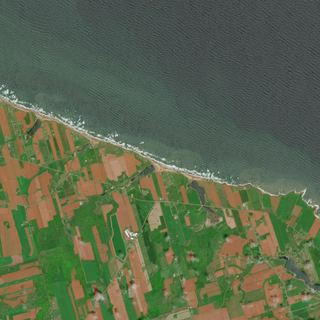
Canada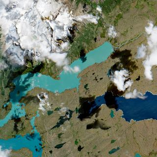
Chile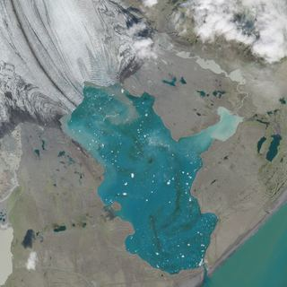
Iceland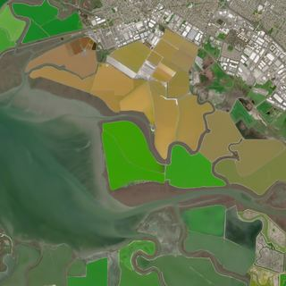
United States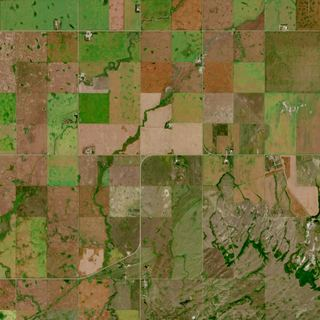
Canada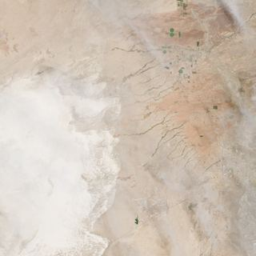
United States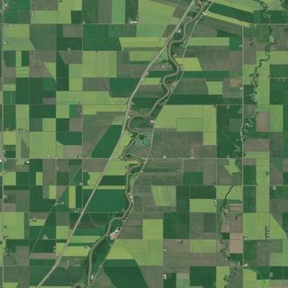
Canada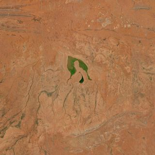
Australia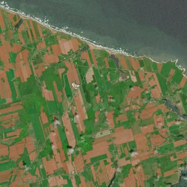
Canada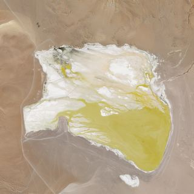
Bolivia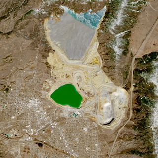
United States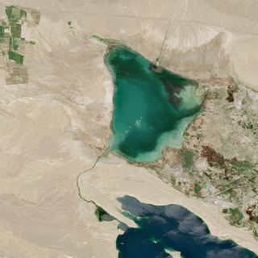
China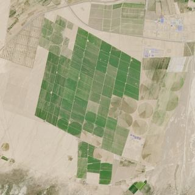
China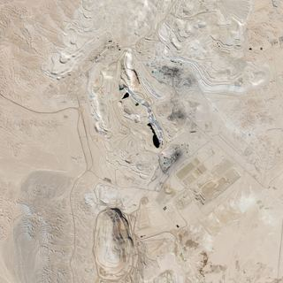
Chile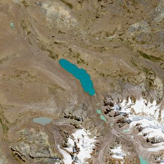
Peru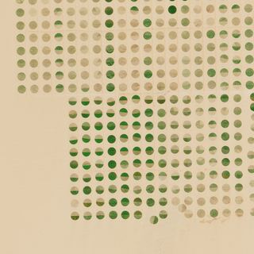
Egypt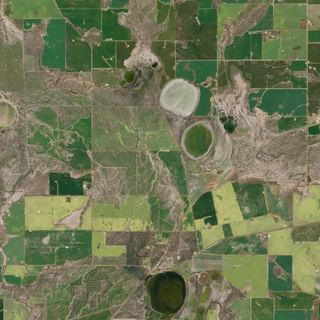
Australia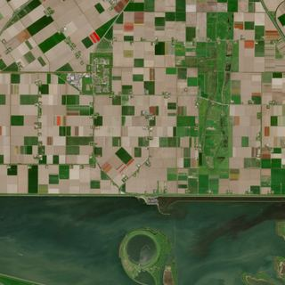
Netherlands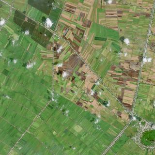
Vietnam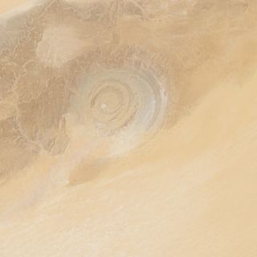
Mauritania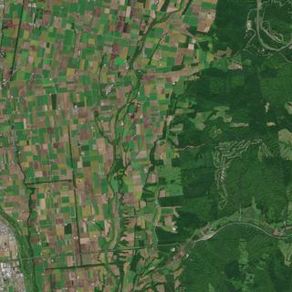
Japan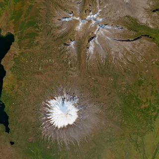
Russia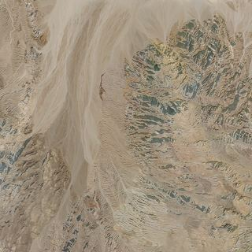
United States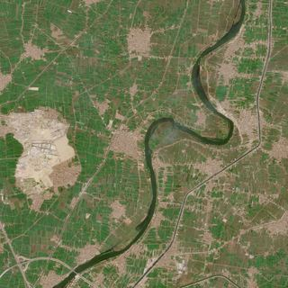
Egypt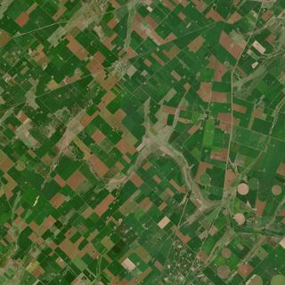
Argentina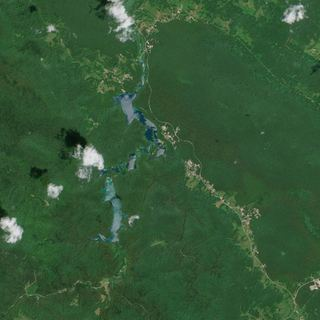
Croatia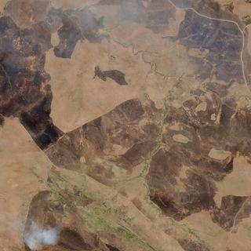
Tanzania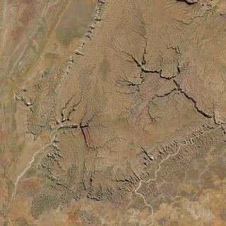
Australia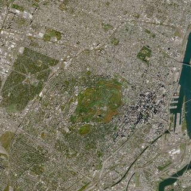
Canada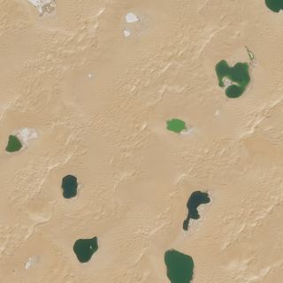
China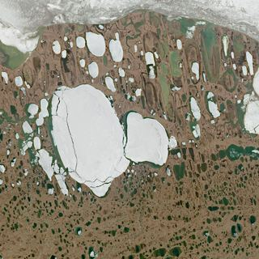
United States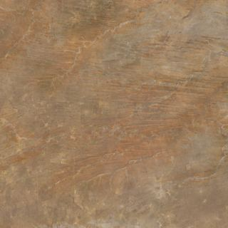
Botswana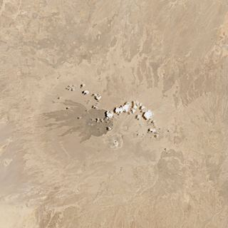
Chad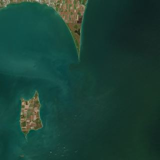
Canada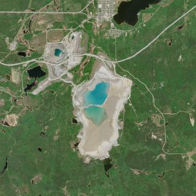
Canada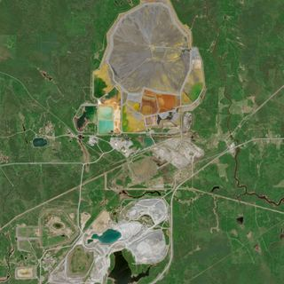
Canada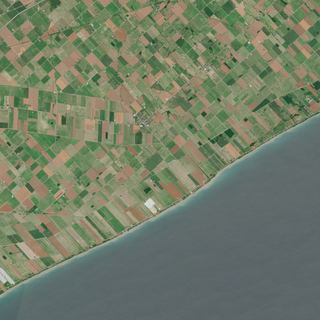
Canada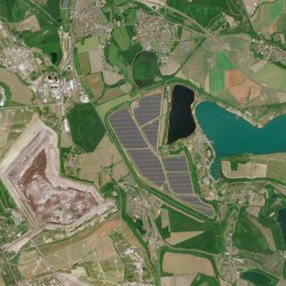
Germany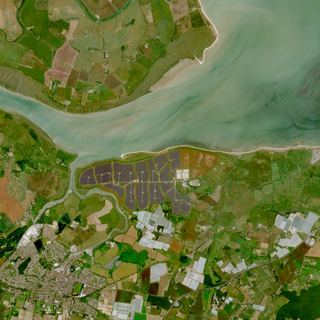
United Kingdom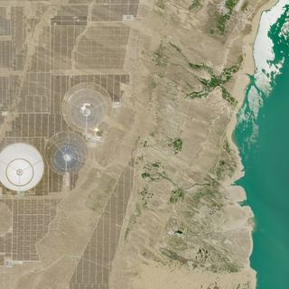
China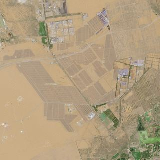
China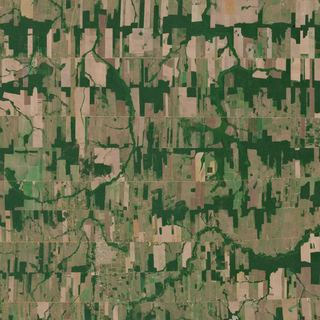
Brazil Brazil Zambia Greenland Canada Iceland United Kingdom Antarctica Antarctica Australia Chile Canada United States China Namibia Botswana Canada Australia Canada Canada Canada Canada United States Canada Canada Canada Canada Canada Canada Canada Canada Mexico Mexico Mexico Vanuatu Canada Mexico Mexico United States United States United States United States United States United States United States United States Brazil Peru United States South Georgia and the South Sandwich Islands Saint Helena, Ascension and Tristan da Cunha Mozambique Venezuela Brazil Canada Canada Canada Canada Japan Italy Bolivia Canada Canada Canada Brazil Brazil United States United States Cayman Islands Canada United States Canada Spain Türkiye Türkiye Oman Italy Denmark Svalbard, Norway United States United States United States Canada Iceland Bangladesh Myanmar New Zealand South Africa Madagascar MadagascarHere's what you get, roughly every two weeks:
- First look at new pieces, before they're posted publicly on the site
- First access to limited/numbered editions, before they sell out
- A short behind-the-scenes note on how one piece was found and made
- The Fan Favourites recap — what other people are responding to